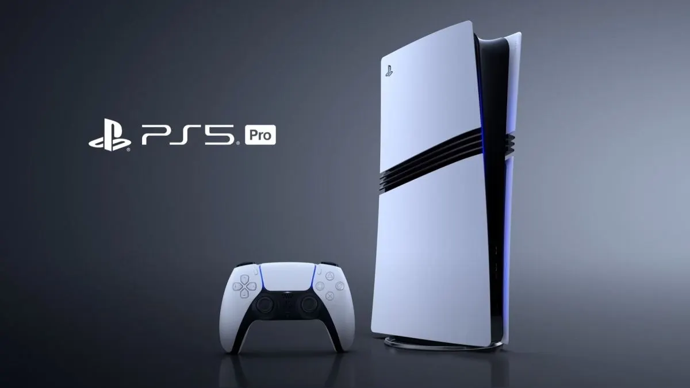
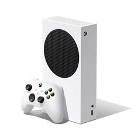
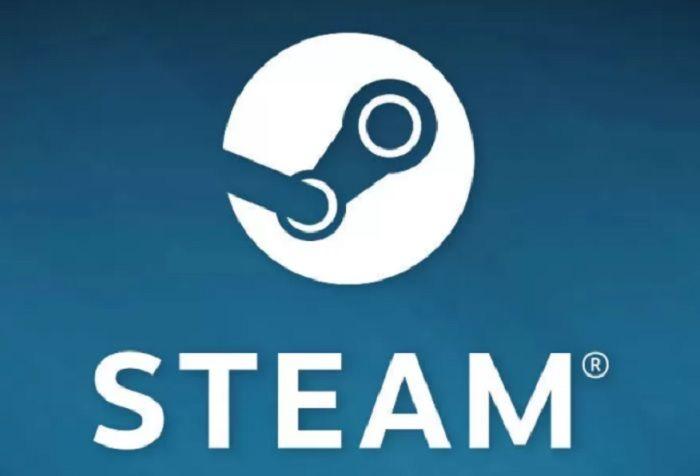

Nueva Playstation 5
La nueva PlayStation 5 llegó para revolucionar la industria del gaming. Con un diseño futurista y un hardware potente, ofrece una experiencia inmersiva gracias al disco SSD ultra rápido, gráficos 4K a 60 fps y tecnología Ray Tracing. Su mando DualSense incorpora vibración háptica y gatillos adaptativos para una jugabilidad más realista. Es compatible con títulos anteriores y cuenta con exclusivos como Demons Souls y Spider-Man: Miles Morales.

Nueva Xbox One
Xbox Series X | S representa el salto generacional de Microsoft en consolas. Con arquitectura Zen 2 y RDNA 2, ofrece una experiencia fluida y de alto rendimiento, especialmente en 4K. Incluye retrocompatibilidad con miles de juegos de generaciones anteriores y acceso inmediato a títulos gracias a Xbox Game Pass. Su diseño minimalista y su enfoque en servicios lo convierten en una opción ideal para quienes buscan potencia y catálogo.

Nueva Nintendo Switch
La Nintendo Switch combina lo mejor de una consola portátil con una de sobremesa. Con juegos icónicos como The Legend of Zelda: Breath of the Wild o Super Mario Odyssey, es ideal para jugadores casuales y fanáticos por igual. Gracias a su modo dock y a los Joy-Con desmontables, permite jugar en grupo, en cualquier lugar y en cualquier momento. Su batería mejorada y su catálogo en constante expansión la posicionan como una consola única en su tipo.

Las mejores PC Gamers
Una PC Gamer de alto nivel puede marcar la diferencia entre jugar y vivir una experiencia inmersiva. Equipadas con procesadores Intel o AMD de última generación, placas de video NVIDIA RTX, memoria RAM DDR5 y refrigeración líquida, estas máquinas están pensadas para rendir al máximo en juegos exigentes como Cyberpunk 2077, Call of Duty: Warzone o Fortnite con gráficos ultra. Además, sus gabinetes RGB y diseños personalizables las hacen tan potentes como estéticas.

Los mejores simuladores para ETS2
Los simuladores para Euro Truck Simulator 2 han evolucionado para ofrecer una experiencia de conducción hiperrealista. Desde cockpits completos con asientos hidráulicos, hasta volantes con Force Feedback y pedales ajustables, cada accesorio suma a la sensación de estar realmente al volante. Compatibles con software de telemetría y pantallas triples, estos setups son la opción perfecta para los fans del transporte de larga distancia.

Ofertas Steam
Steam, la plataforma líder en distribución digital de videojuegos, ofrece cada semana una serie de descuentos imperdibles. Durante eventos como el Steam Summer Sale o el Black Friday, se pueden encontrar títulos populares con hasta un 90% de descuento. Desde éxitos AAA hasta gemas indie, estas promociones permiten expandir tu biblioteca sin vaciar tu billetera. Además, podés añadir juegos a tu lista de deseados para recibir alertas de rebajas automáticas.
Top juegos indie del mes
Si te gustan los desafíos mentales, estos juegos están diseñados para estimular tu pensamiento lógico, concentración y memoria. Desde rompecabezas como The Witness y Portal 2, hasta estrategias como Civilization VI o Chess Ultra, hay opciones para todos los niveles. Muchos de estos títulos han sido reconocidos por estudios por sus beneficios cognitivos, convirtiéndolos en una excelente forma de divertirse y entrenar la mente.
Juegos que entrenan tu mente
Si te gustan los desafíos mentales, estos juegos están diseñados para estimular tu pensamiento lógico, concentración y memoria. Desde rompecabezas como The Witness y Portal 2, hasta estrategias como Civilization VI o Chess Ultra, hay opciones para todos los niveles. Muchos de estos títulos han sido reconocidos por estudios por sus beneficios cognitivos, convirtiéndolos en una excelente forma de divertirse y entrenar la mente.